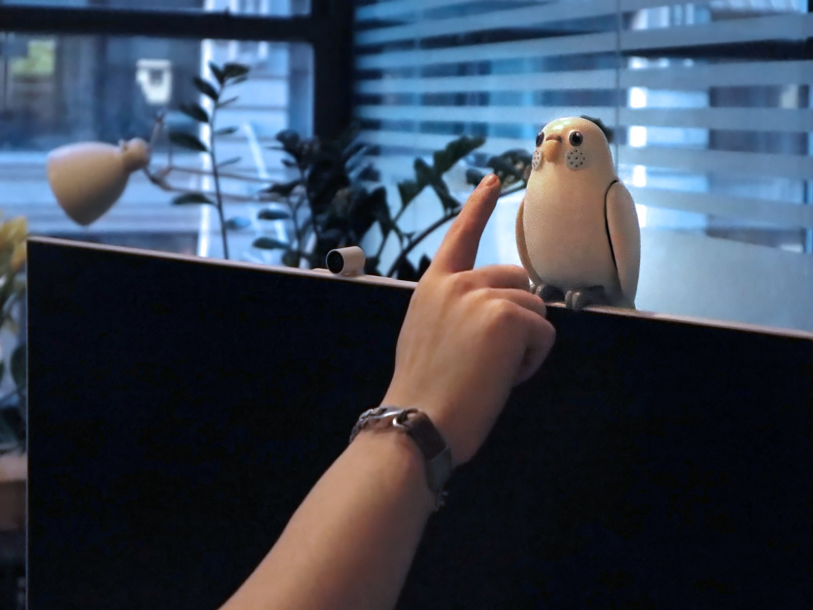
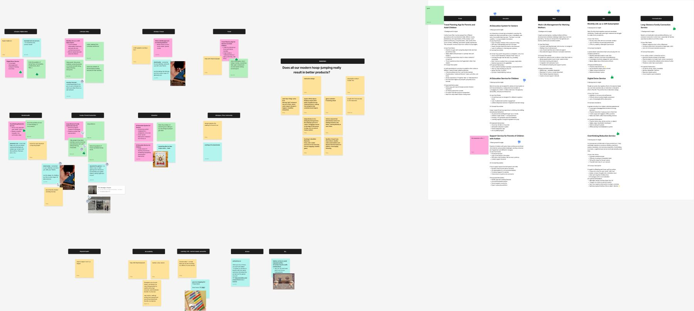
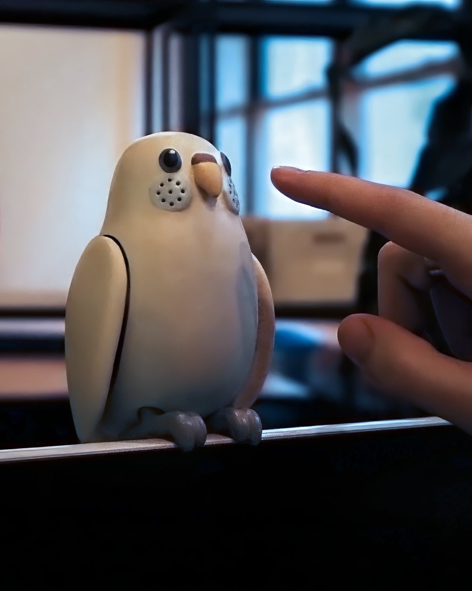
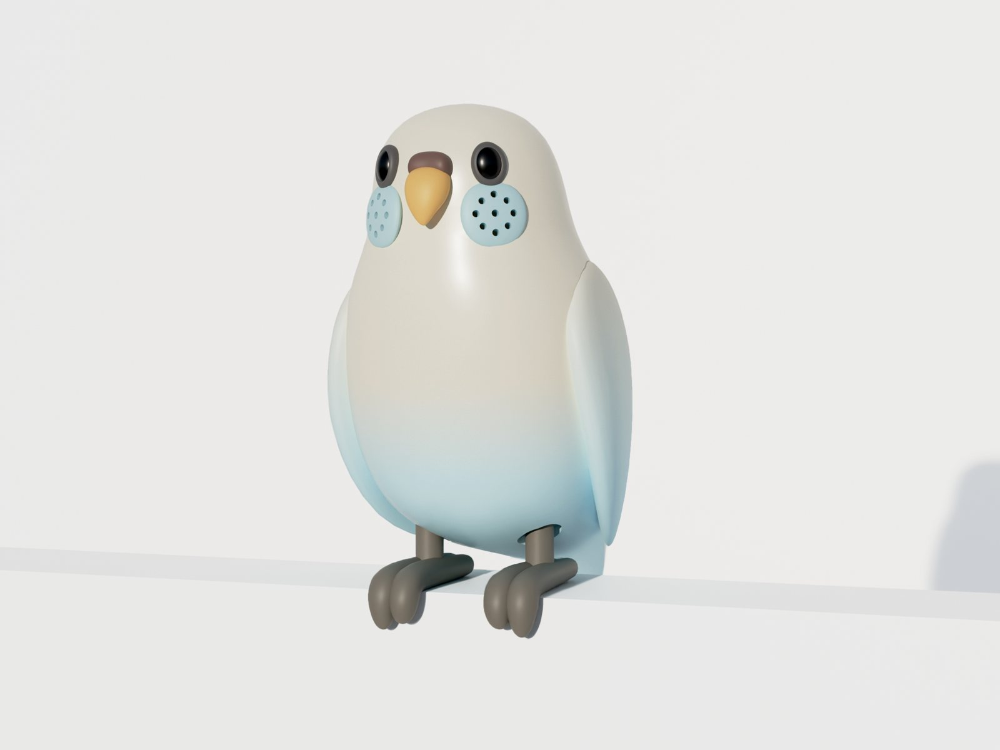

Budgie
A parrot-shaped desk companion that lets long-distance friends send each other short voice messages, beak to beak.
Watch the film on YouTube (opens in new tab)
1. Overview
Keeping friendships alive, one chirp at a time
How might we help long-distance friends stay connected beyond texting and video calls? Budgie sits on top of your monitor and carries small moments between friends in a parrot's voice.
2. Problem
Friendships fade quietly after a move
Who it is for
- Young adults whose close friends moved away for school or work.
- Time zones and new routines make contact harder over time.
- Even sending a message can start to feel demanding.
What exists today
- Devices for couples assume a romantic bond.
- Family photo frames broadcast one way.
- Messaging apps keep friendships alive, but only at the surface.
We audited more than twenty products. None was designed for adult friendships across distance.
3. Research
14 interviews before a single sketch
We started broad, with communication and loneliness, and let the interviews narrow us to one thing: keeping a long-distance friendship going.
- 4
- pilot interviews
- 10
- in-depth interviews
- 20+
- products audited
- 3
- fields of literature
What we asked
- Q1What is the biggest barrier to keeping a long-distance friendship going?
- Q2What role do texting and social media play in friendships today?
- Q3Where in a friendship is the best moment to step in?
How we worked
- Pilot interviews
- In-depth interviews
- Desk research
- Competitive audit
- Affinity mapping
- How Might We questions
- Concept testing
- Prototype testing
Who we spoke to
- Ten people aged 23 to 35 who had moved for school or work.
- UX designers, an actor, engineers, tutors and recent graduates.
- Friends who once lived in the same city, not people who met online.
- Four pilot interviews first, to find the right question.
How the interviews ran
- 40 to 60 minutes each, in English or Mandarin, recorded with consent.
- Topics: communication habits, time zones, drifting apart, moments that cannot be replaced.
- A closing "magic wand" question.
- The guide was peer-checked for leading language.
What the literature says
What is already on the market
| Category | Examples | Why it misses friends |
|---|---|---|
| Couples devices | Bond Touch, Friendship Lamps | Assume the equal, intense investment of romance. |
| Family photo frames | Aura, Skylight | One-way broadcast to a fixed family group. |
| Messaging apps | Instagram, iMessage, Discord, KakaoTalk | What friends use, but they keep things at the surface. |
From insight to design question
| Insight | How might we |
|---|---|
| People need a reason to reach out, not a reminder. | Give easy, low-stakes ways into a conversation, without anyone having to go first? |
| The real need is passive presence, not active updates. | Make sharing life updates more ambient, without relying on text? |
| Shared experience matters. | Help friends build new shared experiences while physically apart? |

4. Solution
Press the beak, send a chirp
From five concepts to one
- 01Round one: Window Portal, Fridge Magnet, Twin PlantersEach one either asked too much of the user or said too little.
- 02Round two: Cuckoo House and The GossiperOne button with a small character, and a parrot that carries your voice to a friend.
- 03BudgieThe press-to-record button of the Cuckoo House with the parrot and voice of The Gossiper.
[Concept sketches for the five ideas go here.]
Send a chirp
Press the beak to record, release to send. A light pitch shift turns your words into a smaller, brighter, funnier voice.

Receive a chirp
Budgie wiggles when a message arrives. No buzz, no beep. You notice when you look up, then press the beak to play it.

See it in use
Brand identity
The part I led. The wordmark hides a small parrot inside the letter g: its body is the descender, and its beak and feet are picked out in blue against a warm dark brown. It reads first as type, then as a bird.
Logo system. Open any version to see it larger.
Colour
- Dark brown
#3D3530Logo and text on light. 12:1 on white. - Budgie blue
#4290F5Beak and feet only. An accent, not a text colour. - White
#FFFFFFLogo on dark, and the background on light.
Typeface
Manjari
Aa Bb Cc Dd Ee Ff Gg Hh Ii Jj Kk Ll Mm Nn Oo Pp Qq Rr Ss Tt Uu Vv Ww Xx Yy Zz
Aa Bb Cc Dd Ee Ff Gg Hh Ii Jj Kk Ll Mm Nn Oo Pp Qq Rr Ss Tt Uu Vv Ww Xx Yy Zz
- Title 1
- 128
- Title 2
- 64
- Title 3
- 48
- Text
- 24
5. Reflection
Five play-testers, five yeses
Next for Budgie
- Fit different monitor and laptop setups.
- Make pairing feel as intentional as the interaction.
- Make the line between ambient and active modes clearer.
- A lighter digital widget version.
What I took away
- Friendships need less effort and more presence, not more reminders.
- [Your own takeaway from the brand work.]
- [Your own takeaway from working in a team of four.]
See next project
Taelor
Product and marketing design for a menswear rental startup.